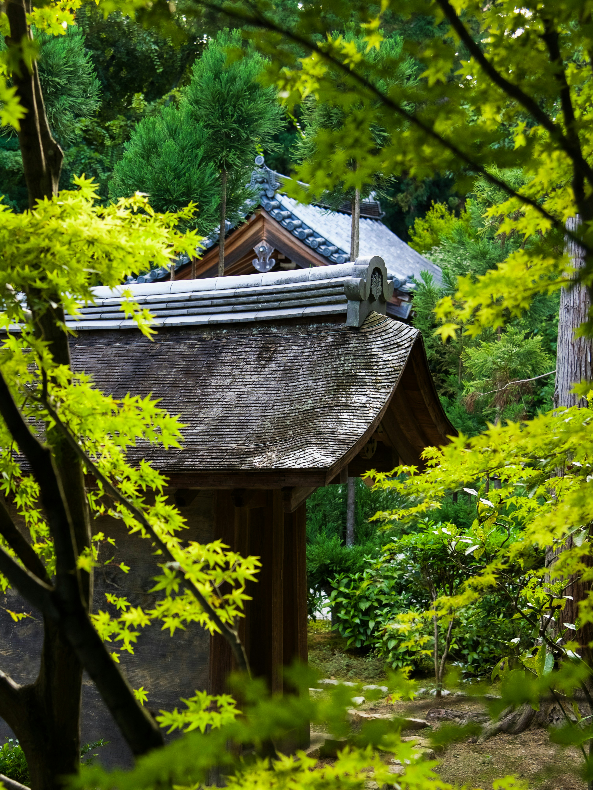

L’Histoire de Kyoto
Nichée entre les montagnes dans le centre de l'ile de Honshu, Kyoto fut la capitale de 794 à 1868 lors de la restauration Maiji ou la capitale fut transférée à Tokyo. Elle est considérée comme la plus belle ville du Japon. De plus, ayant échappé aux bombardements de la seconde guerre mondiale, elle possède encore de nombreux bâtiments d'avant guerre telle que les mashiyas, maison traditionnelle.
794
Fondation de Kyoto.
Dans la même année, Kyoto devient la capitale impériale sous l'empereur Kanmu, marquant le début de la période Heian. Cette décision donne naissance à une époque de grande prospérité culturelle, notamment dans la littérature, l'architecture et les arts. C'est aussi à cette époque que Kyoto commence à accueillir de nombreux temples bouddhistes et sanctuaires shintoïstes.
IXe au XIIe siècle
Kyoto devient le cœur culturel du Japon, favorisant la création de la littérature japonaise classique, notamment avec des œuvres comme "Le Dit du Genji" de Murasaki Shikibu, considéré comme le premier roman du monde.
La période est également marquée par l'essor de l'architecture japonaise traditionnelle et la création de nombreux temples et jardins, comme Kinkaku-ji (Pavillon d'Or).
La période est également marquée par l'essor de l'architecture japonaise traditionnelle et la création de nombreux temples et jardins, comme Kinkaku-ji (Pavillon d'Or).

1467-1477
La guerre Ōnin, qui marque le début de la période Sengoku, dévaste Kyoto et entraîne une période de troubles politiques et militaires, mais la ville conserve son rôle en tant que centre culturel majeur.

1603
Le shogunat Tokugawa est établi à Edo (actuelle Tokyo), mais Kyoto conserve son rôle de capitale impériale et reste un centre culturel, notamment pour la cérémonie du thé, le théâtre nô et les arts du jardin zen. De nombreux temples sont construits ou restaurés pendant cette période, comme Kiyomizu-dera.
La cérémonie du thé se développe sous l'influence de Sen no Rikyū, et Kyoto devient le centre de la culture traditionnelle japonaise.
La cérémonie du thé se développe sous l'influence de Sen no Rikyū, et Kyoto devient le centre de la culture traditionnelle japonaise.

années 1930
Dans les années 1930, Kyoto devient un point focal pour la préservation de l'architecture traditionnelle japonaise face à la modernisation rapide d'autres régions du pays. De nombreux temples et sanctuaires sont restaurés ou préservés durant cette période, assurant la conservation de l'héritage architectural de la ville.


XIIIe au XIVe siècle
Kyoto devient un centre de développement du bouddhisme zen, avec des temples emblématiques tels que Nanzen-ji et Eihei-ji.
La période voit aussi la création de célèbres jardins zen, caractérisés par des agencements minimes et des pierres disposées avec soin, comme celui de Ryoan-ji.
La période voit aussi la création de célèbres jardins zen, caractérisés par des agencements minimes et des pierres disposées avec soin, comme celui de Ryoan-ji.
1590
Toyotomi Hideyoshi, après avoir unifié le Japon, choisit Kyoto comme capitale culturelle et religieuse, bien que le pouvoir militaire soit situé à Osaka.
Hideyoshi organise des festivals culturels comme le gion matsuri, qui reste un événement culturel majeur aujourd'hui.
Kyoto devient un centre important de la culture de la période Azuchi-Momoyama, avec des constructions comme le Palais de Nijo et des jardins somptueux.
Hideyoshi organise des festivals culturels comme le gion matsuri, qui reste un événement culturel majeur aujourd'hui.
Kyoto devient un centre important de la culture de la période Azuchi-Momoyama, avec des constructions comme le Palais de Nijo et des jardins somptueux.
1868
La Restauration Meiji déplace la capitale du Japon de Kyoto à Tokyo, marquant un changement significatif dans la structure politique du pays. Cependant, Kyoto reste un bastion important pour les arts traditionnels et les pratiques culturelles, notamment le Noh, le kabuki, et la cérémonie du thé.
La ville devient un centre de préservation de la culture japonaise traditionnelle.
La ville devient un centre de préservation de la culture japonaise traditionnelle.
1994
Kyoto est inscrite au patrimoine mondial de l'UNESCO, en raison de la conservation exceptionnelle de ses monuments historiques, de ses temples, de ses sanctuaires et de ses jardins historiques. Cela renforce sa réputation de capitale culturelle et historique.